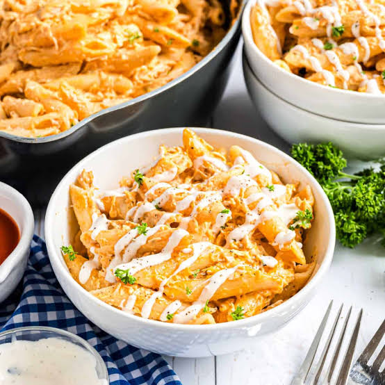

Buffalo Chicken Pasta

Description
This is a delicious and spicy buffalo chicken pasta recipe that's
perfect for a quick weeknight dinner.
This pasta dish has all the flavors of Buffalo chicken wings,
and you don't have to get your fingers full of hot sauce.
It's made on the stovetop and is finger-licking good!
Ingredients
- 2 cups rigatoni pasta
- 2 cups shredded cooked chicken breast
- 1 teaspoon dry ranch salad dressing mix (such as Hidden Valley Ranch®)
- 1 teaspoon salt
- ½ teaspoon black pepper
- ½ teaspoon garlic powder
- 1 (8 ounce) package Neufchatel cheese
- 1 (8 ounce) container sour cream
- ½ cup Buffalo wing sauce (such as Frank's RedHot®)
- ½ cup shredded sharp Cheddar cheese
Steps
- Bring a large pot of lightly salted water to a boil. Cook rigatoni in the boiling water, stirring occasionally until tender yet firm to the bite, about 12 minutes. Drain and set aside.
- Season chicken with ranch dressing mix, salt, pepper, and garlic powder. Set aside.
- Meanwhile, combine Neufchatel cheese, sour cream, and Buffalo wing sauce in a large saucepan over low heat. Cook, stirring constantly, until well combined, about 3 minutes. Add Cheddar cheese and stir well until melted.
- Add pasta and chicken and continue cooking until well incorporated and heated through.
- Sprinkle with shredded Cheddar cheese and serve immediately.
Home